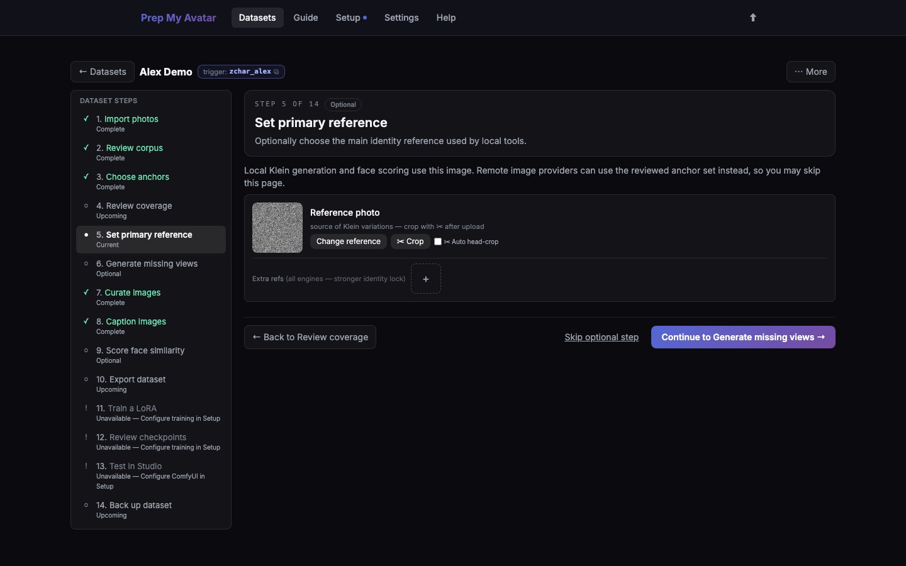

First run · 12 of 21
Step 12: Set a primary reference
This page shows the identity references used by each provider. Remote providers receive the exact ordered pack shown: the authoritative primary, hand-picked supporting photos, then accepted photos selected in Choose photos for generation to fill any remaining places. Local FLUX.2 Klein uses the primary and hand-picked supporting photos. Optional face-similarity scoring uses only the primary.
This is a Character-only step. Concept and Style datasets do not show a primary-reference control; if you chose either kind, skip this page.

Before you begin
You may leave the primary empty when you deliberately want generation providers to select only from reviewed photos. Otherwise, choose a sharp, current image with an unobstructed face and a neutral enough angle to identify the person reliably.
Do this
- Open Set primary reference in the dataset step navigator. Its URL ends in
/referenceand it is labelled Optional. - Select or drop the best reference photo.
- Open the crop control and keep the face clear without cutting off important features.
- Read the ordered pack preview and the provider scope printed on each card. A new remote request receives the displayed set up to its limit; local Klein does not use the automatic Step 3 backfill photos.
- Add up to three hand-picked supporting references only when another clear angle adds useful identity evidence. More references are not automatically better.
- Remove sunglasses, hats, heavy shadows, outdated appearances, duplicates, or any image that conflicts with the primary. Exact duplicate files are omitted automatically and replaced by the next eligible reviewed photo.
- If an automatically selected photo is weak, select Exclude from generation on its card. The photo remains accepted for training and the pack backfills with the next eligible photo. Use Change automatic choices in Step 3 for broader review.
- Confirm every preview shows the intended person and a consistent current appearance, then select Continue.
The identity pack is not the training set. It is a bounded set of identity inputs for generation; accepted images still determine what is available for training.
You are finished when
For Character, the ordered pack contains only clear, consistent photos of the intended person, or you deliberately left the primary empty to use reviewed photos automatically. Concept and Style navigators omit this page.